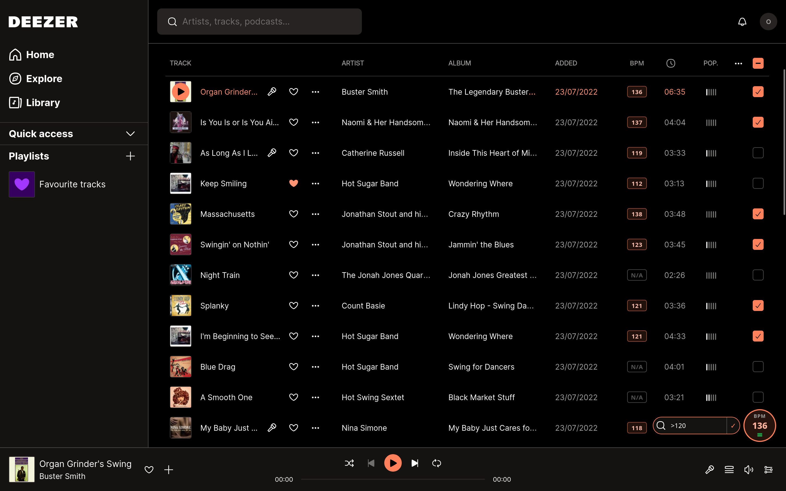

See the BPM of every track you play on Deezer — right in the browser, no account needed.

A small badge fixed to the bottom-right corner shows the BPM of the currently playing track, always visible.
Toggle playlist mode with the ≡ button to show the BPM next to every track in a playlist or album view.
BPM values are cached across sessions so tracks you've seen before load instantly, with no repeated API calls.
Uses the public Deezer API. No sign-up, no configuration — just install and play.
If the extension identified the track correctly, the BPM value it shows is exactly what Deezer's API reports for that track. An incorrect-looking value is most likely inaccurate data on Deezer's side, not a resolution error.
For the curiousThe extension does not compute or estimate BPM itself — it fetches the value directly from the public Deezer API. When the track has been identified with confidence (exact title match against the album's track list), the number displayed is the one Deezer has on record. Considering Deezer's BPM data comes from audio analysis and is not always accurate: values can be halved or doubled, rounded imprecisely, or simply wrong for some tracks.
A good example is Alberto Balsam by Aphex Twin, which Deezer reports at roughly 188 BPM. The track actually sits around 94–96 BPM — the analyser locked onto double the real tempo, a common error with relaxed or syncopated grooves where the beat can be interpreted at two different levels.
If a value looks off, try cross-referencing it with another source such as Tunebat or SongBPM. If those agree with Deezer, the value is likely correct. If they consistently disagree, the inaccuracy is in Deezer's data and cannot be corrected by the extension.
BPM values are fetched one by one as you scroll through a playlist — so until you've scrolled through every track, the extension simply doesn't have all the numbers it would need to sort the full list. Deezer also doesn't offer a built-in way for extensions to reorder tracks, so sorting would have to happen on top of the existing interface, which isn't currently supported.
For the curiousDeezer uses a virtualised list to render playlists: only the rows currently visible on screen exist in the DOM, and they are recycled as you scroll. This means the extension can only fetch and display BPM values for tracks that have been rendered at least once. Without a complete dataset for every track, a meaningful sort isn't possible. On top of that, reordering the rows would require taking over Deezer's own DOM management, which is fragile and likely to break with any Deezer update. A future version may offer an export of BPM data or a sorted overlay view, but true in-place sorting is not planned for now.
The badge, the playlist/album page and the queue rows identify tracks through different paths. When they haven't been seen before, queue rows may resolve to a different version of the same track — for example a single release instead of the album version — which can carry a slightly different BPM value.
For the curiousThe badge identifies the currently playing track by reading the album link directly from the player bar, then matching the track title against that album's track list. Queue rows don't have an album link in their DOM, so when no cached result is available the extension falls back to a title + artist search via the Deezer API, which may return a different release of the same song.
Once a track has been resolved once, the result is cached and reused on subsequent visits, so the values stabilise over time. Clearing the extension cache (via the browser's extension storage) resets all resolutions and may cause the discrepancy to reappear temporarily.
Queue rows that haven't been seen before require an extra search API call to identify the track, and that result isn't always cached — so the same lookup may happen again next time.
For the curiousWhen a queue row has no album link in its DOM and no prior cached entry, the extension queries the Deezer search API using the track title and artist name. This is slower than a direct album lookup, and search results are only cached when the extension can confidently match the result to the cover image shown in the row. If the match isn't considered exact enough, the result is discarded and the search will run again on the next visit.
Tracks that have been seen in a playlist or album page first are resolved through a faster path and will always display their BPM instantly in the queue, since their track ID is already known from that earlier visit.
A ✕ means the extension was unable to identify the track after exhausting all available strategies. The row won't be retried until you reload the page.
For the curiousTo show a BPM, the extension must first resolve the track to a Deezer track ID. It tries several strategies in order: a fast cover-image cache lookup, then fetching the album's track list and matching by title, and finally a title + artist search via the Deezer API (used for queue rows that have no album link). A ✕ appears when all of these fail — for example because the track title in the DOM doesn't closely match anything the API returns, the cover image hasn't loaded in time, or the Deezer API itself returned an error.
Reloading the page often fixes the issue, as cover images and DOM metadata may be fully available on a second pass. Scrolling the problematic track out of view and back can also trigger a fresh resolution attempt, since Deezer recycles list rows as you scroll and the extension will retry any row that re-enters the viewport. Note that ✕ is different from "N/A": N/A means the track was identified but Deezer simply has no BPM data for it.
Have a suggestion or found a bug? Feel free to reach out!
✉️ Send feedback